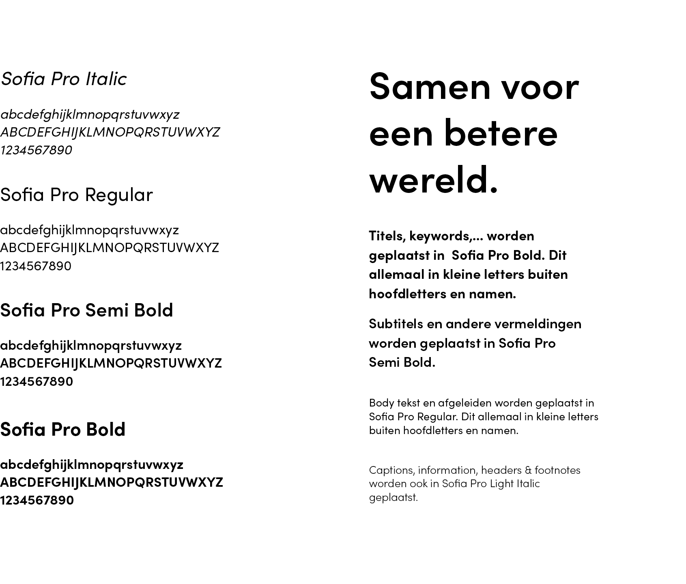

Our Typeface
Bij Recupel speelt typografie een zeer grote rol. Het is namelijk één van de belangrijkste bouwstenen van ons merk. Om onze visie verder door te trekken zochten wij naar een sterk en open font die perfect aansluit bij onze stijl. Hierdoor kwamen we uit bij Sofia Pro.
Samen voor een betere wereld.
Subtitel.
Kleine subtitel.
Subtitel.
Kleine subtitel.
Kleine subtitel.
Recupel organiseert in België de inzameling en de verwerking van afgedankte elektro-apparaten en lampen. Al wie een elektr(on)isch apparaat op de Belgische markt brengt, is bij wet verplicht om ook de inzameling en de verwerking van de afgedankte toestellen op zich te nemen. In het kader van een circulaire maatschappij streeft Recupel naar een betere leefwereld door optimale recuperatie van materialen uit afgedankte elektro-apparaten in opdracht van de producenten.